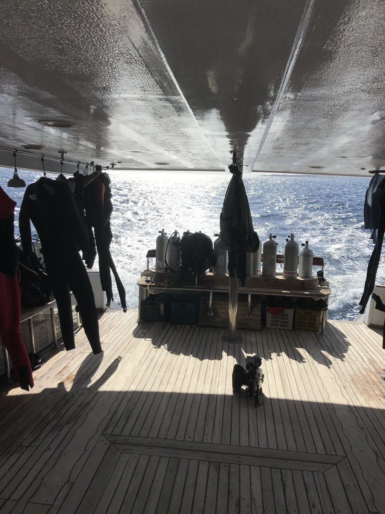

Ожидание разрешения
Дайвинг, это не час с рыбками. это три-четыре часа ожидания, сборки и проверки оборудования. Здесь мы ждали сорок минут решения административных проблем. Египет, жара и мы в чёрных костюмах, с балонами на спине.

Ожидание яхты
Здесь мы ждём разрешение Египетской таможни на выход в море. Сидели час пятнадцать, а нам ещё и оборудование собирать.

Ожидание смены локации
Переход на другую локацию для погружения. Мы успели покушать, вздремнуть, костюмы почти просохли на ветру.